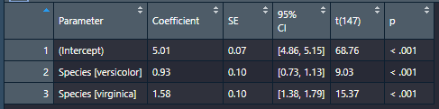

Chapter 12 Statistics- and Psych-specific Stuff
12.1 Create or sample from a distribution
If you want to generate a distribution of data to sample from, use the distribution functions that start with r. I will create a few different binomial distributions as examples.
Each distribution command has parameters you set to create the distribution. The binomial’s has three:
n, the number of samplessize, the number of trials per sampleprob, the probability of a success on each individual trial
Note the definition of the size variable in particular. And imagine we are simulating a bunch of jury trials….
#### Example 1 ####
# 10 jury trials with 1 verdict each
rbinom(n=10, size = 1, prob = .7)
#### Example 2 ####
# 10 jury trials with 2 verdicts per trial. Each participant has 2 outcomes.
rbinom(n=10, size = 2, prob = .7)
#### Example 3 ####
# 1 jury trial with 1 verdict
rbinom(n=1, size = 1, prob = .7)
# or alternatively...
purrr::rbernoulli(n=1, p=.7)The third example of rbinom is equivalent to creating a Bernoulli distribution, because a single binomial event is a Bernoulli event. One coin flip comes from a Bernoulli distribution….a series of 5 coin flips (i.e., trials) comes from a Binomial.
Here’s an example where I generate 100 fake participants, and then for each participant, simulate a single Bernoulli event (a win or a loss at trial).
test=tibble(plea_rejectors=c(1:100),
trial_outcomes=purrr::rbernoulli(n=length(plea_rejectors), p=.3)) |>
mutate(trial_outcomes=ifelse(trial_outcomes=="FALSE", "Loss", "Win"))12.1.1 Calculating Likelihood
If you already have data (or some idea of what the parameters are for a distribution) and you want to find the likelihood, use the density functions that start with d.
For likelihood of getting 6 wins out of 10 trials, and a 50% of winning on each trial, use the density function for a binomial distribution:
dbinom(6, size=10, prob=0.5)## [1] 0.205078112.2 Calculating Interrater reliability
Cohen’s Kappa is useful for IRR agreement on categorical variables…Use the psych package for this see here; and read this web page for an overview of what Cohen’s Kappa is if you need a recap/intro.
For 3+ raters on a continuous variable, use Intraclass Correlation. See this page.
12.3 Statistical tests and modeling with easystats
https://easystats.github.io/easystats/
12.3.1 Getting parameter estimates from model objects
Scenario: You’ve run some statistical test (like the below regression), and want a summary of the model estimates.
rm(iris)
model <- lm(Sepal.Length ~ Species, data = iris)You have a few options when it comes to getting a summary of a model and getting the coefficient estimates: - summary() - broom::tidy() - paramters::model_paramters(), or just paramters::paramters() for short
There’s no reason to use summary, generally speaking, because it sucks. It doesn’t give you tidy output that’s easy to manipulate or extract, it’s hard to read, and it can’t be turned into a useful table. Skip it unless you need something specific from it’s output (i.e., you’re using lavaan)
Options two and three are pretty similar and both give you most of the same information, though parameters() prints neater to the console window. Generally I find parameters preferable.
Note though that neither command will round the numbers if you store it as a table in the environment. So….
- If you want to manipulate ANY info in the table and/or extract info, use
tidyorparameters. Both make tidy tibbles. - If you’re using the command to export said info in a neat, presentable MS Word table or HTML table, and you do not care about extracting/modifying/manipulating anything in it, then use
parametersand pipe it toformat_table()
Using format_table() rounds all columns to 2 decimal places, reformats p-values to APA format, and collapses CI’s into a single column. Do note though that it makes every column into a Character column! So this is for exporting-use only.
Here’s a comparison of broom’s output (first) vs. parameter’s (second) when you save each in the environment. As you can see, both produce tidy tibbles


And here’s what parameters(model) |> format_table() does to the a parameters table:

Much cleaner for making a table to export to Word.
12.3.2 Getting model information and performance metrics
Again, two options here. You can use either glance from the broom package, or performance from the package of the same name. These each produce slightly different output, though unlike above, I don’t think one is necessarily better than the other. Use whichever one you prefer.
broom::glance(model)## # A tibble: 1 x 12
## r.squared adj.r.squared sigma statistic p.value df logLik AIC BIC deviance df.residual nobs
## <dbl> <dbl> <dbl> <dbl> <dbl> <dbl> <dbl> <dbl> <dbl> <dbl> <int> <int>
## 1 0.619 0.614 0.515 119. 1.67e-31 2 -112. 231. 243. 39.0 147 150performance::performance(model)## # Indices of model performance
##
## AIC | BIC | R2 | R2 (adj.) | RMSE | Sigma
## -----------------------------------------------------
## 231.452 | 243.494 | 0.619 | 0.614 | 0.510 | 0.51512.3.3 Effect size info with effectsize
logreg_model=glm(smoke ~ age + sex, data= legaldmlab::survey, family = "binomial")
logreg_model_coeff=parameters::parameters(logreg_model)
logreg_model_coeff=logreg_model_coeff |> dplyr::mutate(odds_ratio=exp(Coefficient))
effectsize::interpret_oddsratio(logreg_model_coeff$odds_ratio, rules = "chen2010")## [1] "small" "very small" "very small"
## (Rules: chen2010)12.3.4 Quick, detailed, and automated reporting with report
Check out https://easystats.github.io/report/